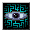

掠奪の巨大眼球 Eye of draining
英語版 CrawlWiki の記事「Eye of draining」(0.34 向け、2026-09-27 版)の翻訳です。原文の著者は編集履歴をご覧ください。
| 掠奪の巨大眼球 G | |
|---|---|
| HP | 51-104 |
| HD | 14 |
| XP | 768 |
| 速度 | 10(移動: 80%) |
| AC | 3 |
| EV | 1 |
| 意志力 | 80
|
| 耐性 | rAcid+++ |
| 弱点 | なし |
| 生息地 | 陸上 |
| 知能 | 無知性 |
| 使用 | 何も使わない |
| 分類 | 生物 |
| 体格 | 中くらい |
| 種類 | 浮遊する巨大眼球、掠奪の巨大眼球 |
| フラグ | 飛行 霊視 骨格なし 慎重 邪悪 |
| 従者の眼の中でも稀で異質な、邪悪なエネルギーを放つ宙に浮かぶ恐怖だ。これらは神聖なるジーヴァのために、混沌とした生命と常に存在する死の流れを見張っている。 |
基本情報
掠奪の巨大眼球は宙に浮かぶ器官で、物理的な攻撃は持たない。その代わり、掠奪の眼光を唱えるたびに、プレイヤーの現在の最大 HP の10%を衰弱させてくる。放っておくときわめて危険だ。負のエネルギーへの耐性があればこれを減らせて、rN+、rN++、rN+++ でそれぞれ5%、2%、0%になる。おもにスライムの穴ぐらに出るが、ごくまれに深層でも見かける。
呪文
| タイル | 名前 | ダメージ | 射程 | フラグ |
|---|---|---|---|---|
|  |
掠奪の眼光 | — | LOS | 魔法フラグ, 即時フラグ |

小技
- スライムの穴ぐらには負のエネルギーへの耐性のある装備を持っていこう。
- rN がないなら、煙幕の巻物や壁を使って視線を切ろう。
- アンデッドの種族には掠奪の巨大眼球がまったく効かないので、安心して無視できる。